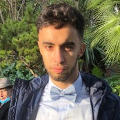

HAMZA RAHAL

Étudiant en 2ème année d’école d’ingénieur (BAC+3) en instrumentation & génie
des systèmes embarqués
En recherche d’un stage ouvrier en juillet 2021 pour une durée minimum d’un
mois, mobile en France et à l’étranger
Projets
Robot autonome
Janvier 2021 - Aujourd'hui
Gestion de capteurs et actionneurs
Conception 3D (Autodesk fusion 360)
Mise en place de méthodes d’odométrie
Implémentation d’asservissement
Calcul d’erreur et d’incertitude
Maître d'esprit
Février 2020 - Mars 2019
Développement d’une interface graphique du jeu Mastermind
intégration d’un bot qui s’exprime après chaque coup joué
Utilisation d'une Librairie (GTK)
Expérience
Président du BDE Sup'Galilée
Mars 2021 - Aujourd'hui
Gestion d’équipe, de budget, résolution de problèmes, présentation et représen-
tation de l’association, organisation d’événements(WEI, Gala, Noël Canadien,
SKI), recherche de financement(sponsor, FSDIE, CVEC etc.), gestion d’un local
et notamment de son snack, d’évènement à plus de 150 personnes
Ouvrier Polyvalent
Amazon
Picking : récuperer les articles dans les étagères de l'entrepôt
Packing : mise en carton pour l'expédition
Éducation
Sup galilée ingénieur
Sept 2020 - Aujourd'hui
électronique analogique et numérique, traitement du signal
Robotique conception 3d
automatisme de process industrielle
Institut Galilée
Sept 2018 - Juilet 2020
Classe préparatoire intégrée
Lycée Germaine Tillion
Sept 2014 - Juillet 2017
Bac S spé math: Mention Bien
Hobbies
bricolage
conception 3D
projets mécatroniques